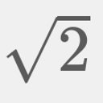
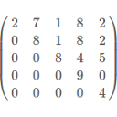

Structs in C++ |
Recent Posts all posts
|  |
Calculate square roots |
Fractions in C++ |
|  |
Solving linear equations with Gaussian elimination |
Generating many prime numbers |
C++ Operator overloading |
|
|
Part I: Performance of Matrix multiplication in Python, Java and C++ |
Vectors in C++ |
Sets in C++ |
Stacks in C++ |